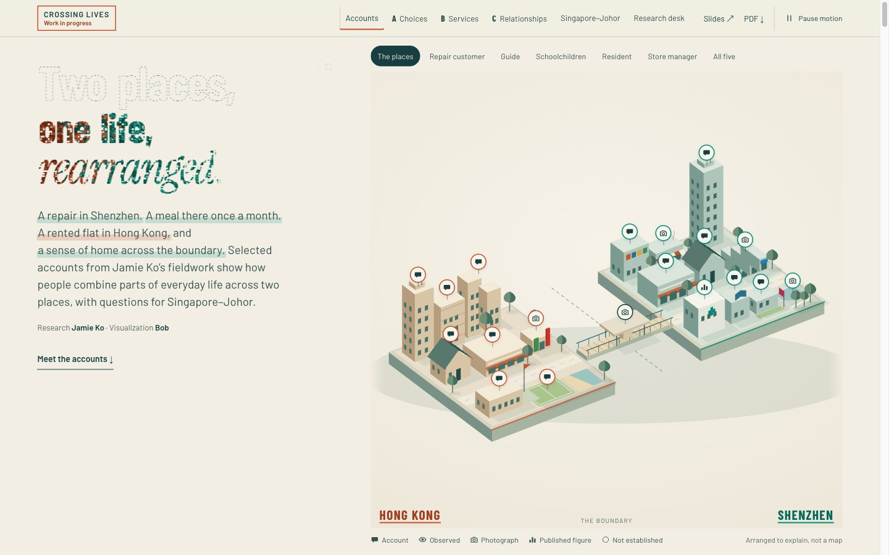
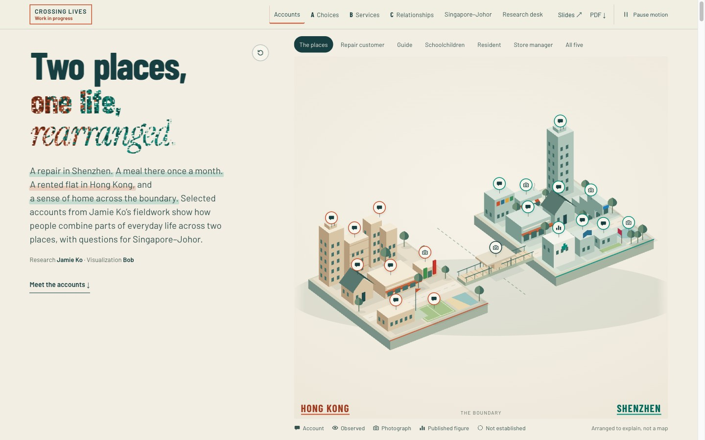

For Bob & Jamie · comparison only
Three changes to consider.
The live draft keeps the approved design. Try each proposal here, then choose what earns its place.
Proposal · solid ink remains after the photographs rearrange.
Open full size ↗Try the replay button, hover over the title, or open a photograph.
Study 02 uses the opt-in WebGPU model where your browser supports it. The screenshots below were captured with native WebGPU on a Mac; the ordinary SVG fallback remains available.
At a glance.
Actual browser captures · select an image for full size.


Trade-off: a stronger reading hierarchy, with less of the original “ghost” effect.